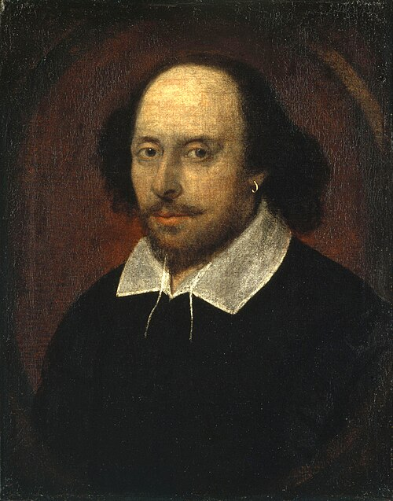
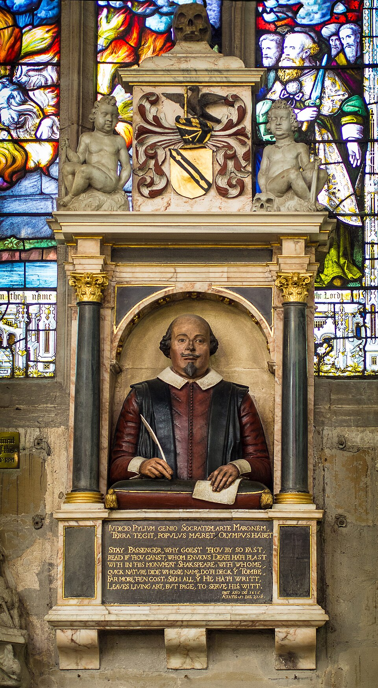

01
«Потерянные годы»
С 1585 по 1592 год о Шекспире нет почти никаких документов. Одни исследователи считают, что он учительствовал, другие — что служил в армии или даже плавал на корабле. Эта лакуна до сих пор питает самые смелые гипотезы.
Бард из Стратфорда · 1564–1616
Нажмите, чтобы войти
Самый загадочный драматург в истории мировой литературы. О нём сохранилось мало достоверных фактов — и тем больше легенд, догадок и восторженных (а порой и резких) суждений. Здесь собраны его пьесы, переводчики, биография и то, как к нему относились великие умы России и Запада.

Шекспир — это редкий случай, когда величие текстов намного превосходит объём достоверных сведений о жизни автора.
Уильям Шекспир родился, по преданию, 23 апреля 1564 года в Стратфорде-на-Эйвоне — небольшом провинциальном городке в графстве Уорикшир. Его отец, Джон Шекспир, был перчаточником и торговцем, мать, Мэри Арден, происходила из уважаемой семьи. О детстве и юности будущего драматурга известно на удивление мало — этот период даже называют «потерянными годами».
В 1582 году он женился на Энн Хэтэуэй, которая была старше его на восемь лет. Вскоре родились дети — Сюзанна и близнецы Хэмнет и Джудит. Около 1587 года Шекспир уехал в Лондон, где началась его театральная карьера: сначала он работал рабочим сцены и переписчиком ролей, затем стал актёром и, наконец, драматургом.
Он был совладельцем театра «Глобус» и пайщиком труппы «Слуги лорда-камергера» (позже — «Слуги короля»). Его пьесы шли с огромным успехом, а сонеты и поэмы принесли ему славу и в литературных кругах. Умер Шекспир 23 апреля 1616 года в Стратфорде и был похоронен в церкви Святой Троицы.
При этом ни одной рукописи, ни одного прижизненного портрета (в общепризнанном смысле) и ни одного развёрнутого отзыва современников о нём как о писателе не сохранилось. Именно эта пустота вокруг имени и породила знаменитый «шекспировский вопрос».
Вокруг его имени сложился целый мифологический круг: от браконьерства в молодости до спора о том, кто скрывался под маской «потрясающего копьём».
С 1585 по 1592 год о Шекспире нет почти никаких документов. Одни исследователи считают, что он учительствовал, другие — что служил в армии или даже плавал на корабле. Эта лакуна до сих пор питает самые смелые гипотезы.
Одна из ранних легенд гласит, что молодой Шекспир был пойман на браконьерстве в заповеднике сэра Томаса Люси. Именно поэтому, якобы, ему пришлось бежать в Лондон. Документальных подтверждений этому нет, но легенда оказалась удивительно живучей.
С конца XVIII века спорят: мог ли сын перчаточника из провинции написать «Гамлета» и «Короля Лира»? «Претендентами» называли Фрэнсиса Бэкона, графа Оксфорда, Кристофера Марло и даже саму королеву Елизавету. Научный мейнстрим отвергает эти версии, но легенда живёт.
На надгробии Шекспира в Стратфорде высечены слова, предостерегающие от переноса его останков. Это породило легенду о «проклятии», которое падёт на того, кто потревожит его прах.
Фамилия «Шекспир» буквально означает «потрясающий копьём». Это породило романтическую легенду о том, что он был воином или даже наёмником, прежде чем стать актёром и драматургом. Красивая, но не подтверждённая история.
В 2015 году ботаник и историк Марк Гриффитс заявил, что нашёл единственный прижизненный портрет Шекспира на титульном листе книги XVI века по ботанике. Открытие вызвало бурную дискуссию, но легенда о «неуловимом лице» только окрепла.
Самая радикальная и самая шутливая версия: никакого Шекспира-драматурга не существовало, а пьесы написал его дворецкий (или слуга, или кто-то из окружения), пожелавший остаться в тени. Всерьёз эту идею никто из учёных не защищает — это пародия на «антистратфордианские» теории. Но в интернете она живёт как анекдот: «Шекспир был неграмотным, а всё написал его дворецкий».
Шекспир писал трагедии, комедии, хроники и «проблемные пьесы». В России его читают и играют в переводах блистательных мастеров — от Михаила Лозинского до Бориса Пастернака. Нажмите на карточку, чтобы открыть текст пьесы.
Перевод: Михаил Лозинский; Борис Пастернак
ТрагедияПеревод: Татьяна Щепкина-Куперник; Борис Пастернак
ТрагедияПеревод: Борис Пастернак
ТрагедияПеревод: Борис Пастернак
ТрагедияПеревод: Юрий Корнеев; Михаил Лозинский
ТрагедияПеревод: Дмитрий Михаловский; Александр Островский (отрывок)
КомедияПеревод: Татьяна Щепкина-Куперник
КомедияПеревод: Татьяна Щепкина-Куперник; Пётр Вейнберг
КомедияПеревод: Пётр Вейнберг; Дмитрий Михаловский
КомедияПеревод: Пётр Вейнберг
КомедияПеревод: Татьяна Щепкина-Куперник
ХроникаПеревод: Александр Соколовский; Пётр Вейнберг
ХроникаПеревод: Александр Соколовский; Пётр Вейнберг
ХроникаПеревод: Александр Соколовский
ХроникаПеревод: Александр Дружинин
СонетыПеревод: Самуил Маршак (канонический перевод)
ПоэмаПеревод: Александр Курошева
ПоэмаПеревод: Татьяна Щепкина-Куперник
Шекспир был не только драматургом, но и актёром, пайщиком и совладельцем театра. Его «Глобус» стал одним из главных театров Англии — и местом, где впервые увидели свет многие его пьесы.
Театр «Глобус» был построен в 1599 году на южном берегу Темзы, в Бэнксайде. Его возвели из разобранного здания первого публичного театра Лондона — «Театра» (The Theatre), который к тому времени пришёл в негодность. Шекспир был пайщиком труппы «Слуги лорда-камергера» (позже — «Слуги короля»), и «Глобус» стал главной площадкой для его пьес.
Самые известные высказывания — из пьес и сонетов. Это его «театральный манифест», разбросанный по репликам героев.
От исторического «Глобуса» до Королевской шекспировской компании и московских театров: выберите площадку и перейдите по ссылке, чтобы купить билеты.
Реконструкция исторического «Глобуса» на берегу Темзы. В репертуаре — Шекспир, современные пьесы и постановки при свечах в Sam Wanamaker Playhouse.
Главная шекспировская труппа мира. Спектакли идут в Royal Shakespeare Theatre и Other Place. В 2025 году — «Макбет» и «Генрих V».
Старейший театр Франции. В сезоне 2025 года — «Макбет» в постановке Сильвии Косты (24 января — 11 мая 2025).
Один из главных театров немецкоязычного мира. В 2025 году — «Ричард III» (ноябрь) и «Гамлет».
Проект «Шекспир@Shakespeare»: «Ромео и Джульетта», «Макбет» и другие постановки. Билеты — на сайте театра и у партнёров.
«Сонеты Шекспира» (премьера 2025) и «Как вам это понравится?». Билеты — от 500 до 6 500 ₽.
«Сон в летнюю ночь» и «ШекспирГамлет» в репертуаре. Билеты — от 800 ₽.
Оперная сцена, где идут музыкальные версии Шекспира. В сезоне 2025/26 — «Леди Макбет Мценского уезда» Шостаковича (декабрь 2025).
Шекспир вызывал не только восторг. Его величие измеряется и силой отталкивания: даже критики, отвергавшие его, писали о нём с той степенью серьёзности, которую дарует только гений. Нажмите «Подробнее», чтобы прочитать расширенный комментарий и ссылку на статью.
Пушкин познакомился с Шекспиром во многом через французские переводы и уже в 1820-е годы осознал его как «отца» новой драматургии. В заметке «О народной драме и драме „Марфа Посадница“» (1830) он писал о «вольном и широком изображении характеров» у Шекспира, противопоставляя его классицистической «правильности».
Влияние Шекспира ощутимо в «Борисе Годунове»: Пушкин сознательно строил трагедию «по шекспировскому образцу» — с народными сценами и многоголосием. Он ценил в английском драматурге правду страстей и отсутствие назидательности.
Подробнее о Пушкине →Белинский посвятил Шекспиру ряд статей, прежде всего — «Гамлет, драма Шекспира. Мочалов в роли Гамлета» (1838). В ней он разбирал не только пьесу, но и игру великого актёра, и утверждал, что Шекспир «обнимает» всю жизнь — и её светлые, и её тёмные стороны.
Для Белинского Шекспир — образец «истинно романтического» искусства, где гений не боится изображать зло, потому что видит человека целиком. Эта мысль во многом задала тон русской критике XIX века.
Подробнее о Белинском →Герцен писал о Шекспире в «Былом и думах», в дневниках и письмах. Он воспринимал его как художника, в котором «грудь человека — вселенная»: Шекспир, по Герцену, сумел вместить в свои пьесы и добро, и зло, и трагедию, и фарс.
Особенно важно для Герцена то, что Шекспир стоит на границе двух эпох — романтической и новой. В нём ещё живёт «титаническая» мощь Возрождения, но уже слышны трезвые, аналитические ноты, которые Герцен ценил в современной литературе.
Подробнее о Герцене →Речь Тургенева была произнесена на торжествах по случаю 300-летия Шекспира в 1864 году. В ней он подчёркивал, что Шекспир для русской культуры уже не «чужой», а «свой» — вошёл в язык, в театр, в литературу.
За четыре года до этого Тургенев написал знаменитую статью «Гамлет и Дон-Кихот» (1860), где сравнил два вечных типа: рефлексирующего, сомневающегося Гамлета и самоотверженного, верящего Дон-Кихота. Эта работа до сих пор остаётся одной из самых цитируемых русских интерпретаций шекспировского героя.
Подробнее о Тургеневе →Толстой перечитал всего Шекспира в оригинале и пришёл к выводу, что тот «не художник», а «ремесленник», который подражает внешним эффектам. В статье он разбирал «Короля Лира», «Отелло», «Гамлета» и находил в них натяжки, неправдоподобие и отсутствие «религиозного» центра.
Критика Толстого вызвала бурную полемику. Многие современники (например, Корней Чуковский, позже написавший книгу «Высокое искусство») спорили с ним. Но сама статья осталась важным документом: она показывает, что даже отвергая Шекспира, русская культура мерила себя его меркой.
Текст статьи Толстого →Гёте открыл Шекспира в 1770-е годы и был потрясён его свободой. В романе «Годы учения Вильгельма Мейстера» он вложил в уста героя знаменитый разбор «Гамлета»: Шекспир, по Гёте, показывает «великое деяние», которое легло на душу, не способную его вынести.
В эссе «Шекспир и несть ему конца» (1813–1816) Гёте писал, что Шекспир — «неисчерпаем»: каждое поколение находит в нём своё. Гёте не копировал Шекспира, но учился у него широте взгляда на мир.
Подробнее о Гёте →Шиллер вырос на Шекспире: его ранняя драма «Разбойники» (1781) поразила современников именно шекспировской энергией и отказом от классицистических единств. В предисловии к «Мессинской невесте» (1803) Шиллер размышлял о том, как соединить шекспировскую свободу с античной формой.
Для Шиллера Шекспир был примером того, как драматург может «выйти за пределы» сцены и показать историю как живую стихию.
Подробнее о Шиллере →Книга Гюго «Уильям Шекспир» (1864) — это не столько биография, сколько гимн гению. Гюго писал, что Шекспир — «одна из тех вершин, где человек встречается с бесконечностью». Для Гюго Шекспир — воплощение романтической свободы: он смешивает трагическое и комическое, высокое и низкое, как сама жизнь.
Эта книга во многом определила образ Шекспира как «романтика» для всего XIX века — в том числе и для русских читателей.
Подробнее о Гюго →В «Философских письмах» (1734) Вольтер познакомил французов с Шекспиром — и одновременно предупредил: это «гений без правил». Он восхищался монологом Гамлета, но ужасался грубости могильщиков и «непристойностям» в «Гамлете» и «Отелло».
Вольтер считал, что французская трагедия (Корнель, Расин) выше по форме, хотя признавал, что у Шекспира есть «искры гения». Этот спор о «варварстве» и «вкусе» растянулся на весь XVIII век.
Подробнее о Вольтере →Шоу называл себя «антишекспиристом» и в предисловиях к своим пьесам постоянно спорил с «бардом». Он считал, что Шекспир часто жертвует мыслью ради красивой фразы, и что современный театр должен идти дальше.
При этом Шоу не раз переписывал Шекспира: в 1937 году он создал «Cymbeline Refinished» — новый финал «Цимбелина», а в пьесе «Тёмная леди сонетов» (1910) вывел самого Шекспира персонажем. Это критика изнутри — из восхищения и раздражения одновременно.
Подробнее о Шоу →Гарольд Блум (1930–2019) — один из самых влиятельных литературных критиков XX века. В книге «Шекспир: изобретение человеческого» (1998) он утверждал, что Шекспир «изобрёл» современного человека: его персонажи мыслят, сомневаются и меняются так, как до него в литературе не умели.
Блум называл Шекспира «смертным Богом» и ставил его выше всех писателей — не только по масштабу, но и по способности создавать внутреннюю жизнь героя. Эта книга до сих пор вызывает споры, но остаётся ключевой для «шекспироведения».
Подробнее о Блуме →Портреты, гравюры и титульные листы его пьес: то немногое, что позволяет увидеть лицо и облик эпохи.
